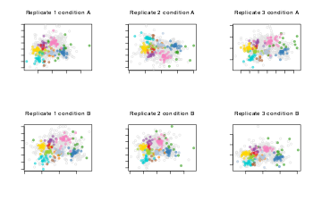
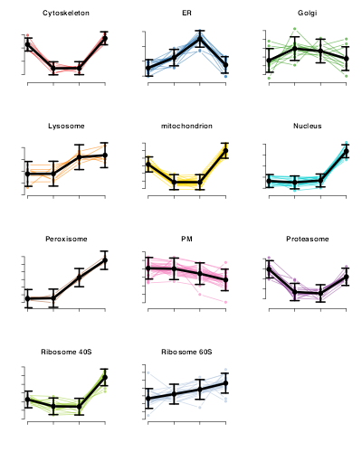
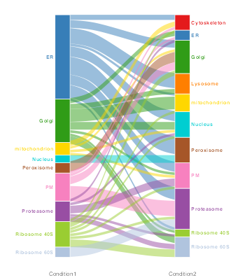

Vignette 1: Getting Started with BANDLE
Oliver M. Crook
Department of Statistics, University of Oxford, UKLisa M. Breckels
Cambridge Centre for Proteomics, University of Cambridge, UKSource:
vignettes/v01-getting-started.Rmd
v01-getting-started.RmdAbstract
This vignette provides an introduction to the BANDLE package (Crook et al. 2021) and follows a short theortical example of how to perform differential localisation analysis of quantitative proteomics data using the BANDLE model. Explanation and general recommendations of the input parameters are provided here. For a more comprehensive workflow which follows a real-life use case, please see the second vignette in this package.
# options(width = 150)
library("bandle")
library("ggplot2")
library("pRoloc")
library("pRolocdata")
library("MSnbase")
library("pheatmap")
library("viridis")
setStockcol(paste0(getStockcol(), "90")) # settransparent coloursIntroduction
Bayesian ANalysis of Differential Localisation Experiments (BANDLE) is an integrative semi-supervised functional mixture model, developed by (Crook et al. 2021), to obtain the probability of a protein being differentially localised between two conditions.
In this vignette we walk users through how to install and use the R (R Development Core Team 2011) Bioconductor (Gentleman et al. 2004) bandle package by simulating a well-defined differential localisation experiment from spatial proteomics data from the pRolocdata package (Gatto et al. 2014).
The BANDLE method uses posterior Bayesian computations performed using Markov-chain Monte-Carlo (MCMC) and thus uncertainty estimates are available (Gilks, Richardson, and Spiegelhalter 1995). Throughout this vignette we use the term differentially localised to pertain to proteins which are assigned to different sub-cellular localisations between two conditions. One of the main outputs of BANDLE is the probability that a protein is differentially localised between two conditions.
Installation
The package can be installed with the BiocManager package:
if (!requireNamespace("BiocManager", quietly=TRUE))
install.packages("BiocManager")
BiocManager::install("bandle")The data
In this vignette and Crook et al. (2021), the main data source that we use to study differential protein sub-cellular localisation are data from high-throughput mass spectrometry-based experiments. The data from these types of experiments traditionally yield a matrix of measurements wherein we have, for example, PSMs, peptides or proteins along the rows, and samples/channels/fractions along the columns. The bandle package uses the MSnSet class as implemented in the Bioconductor MSnbase package and thus requires users to import and store their data as a MSnSet instance. For more details on how to create a MSnSet see the relevant vignettes in pRoloc. The pRolocdata experiment data package is a good starting place to look for test data. This data package contains tens of quantitative proteomics experiments, stored as MSnSets.
A well-defined theoretical example
To get started with the basics of using bandle we begin by generating a simple example dataset which simulates a differential localisation experiment (please see the second vignette in this package for a full real-life biological use case). In this example data, the key elements are replicates, and a perturbation of interest. There is code within the bandle package to simulate an example experiment.
In the code chunk below we begin by loading the pRolocdata package to obtain a spatial proteomics dataset. This will be the basis of our simulation which will use boostrapping to generate new datasets. The dataset we have chosen to load is a dataset from 2009 (tan2009r1). This is data from a early LOPIT experiment performed on Drosophila embryos (Tan et al. 2009). The aim of this experiment was to apply LOPIT to an organism with heterogeneous cell types. This experiment used four isotopes across four distinct fractions and thus yielded four measurements (features) per protein profile. We visualise the data by using principal components analysis.
library("pRolocdata")
data("tan2009r1")
plot2D(tan2009r1,
main = "An example spatial proteomics datasets",
grid = FALSE)
addLegend(tan2009r1, where = "topleft", cex = 0.7, ncol = 2)The following code chuck simulates a differential localisation experiment. It will generate numRep/2 of each a control and treatment condition. We will also simulate relocalisations for numDyn proteins.
set.seed(1)
tansim <- sim_dynamic(object = tan2009r1,
numRep = 6L,
numDyn = 100L)The list of the 6 simulated experiments are found in tansim$lopitrep. Each one is an MSnSet instance (the standard data container for proteomics experimental data). The first 3 are the simulated control experiments (see tansim$lopitrep[1:3]), and the following 3 in the list are the treatment condition simulated experiments (see tansim$lopitrep[4:6]). We can plot them using the plot2D function from pRoloc.
plot_title <- c(paste0("Replicate ", seq(3), " condition", " A"),
paste0("Replicate ", seq(3), " condition", " B"))
par(mfrow = c(2, 3))
out <- lapply(seq(tansim$lopitrep), function(z)
plot2D(tansim$lopitrep[[z]], grid = FALSE, main = plot_title[z]))
For understanding, exploring and visualizing individual spatial proteomics experiments, see the vignettes in pRoloc and MSnbase packages.
tansim$lopitrep[[1]]## MSnSet (storageMode: lockedEnvironment)
## assayData: 888 features, 4 samples
## element names: exprs
## protocolData: none
## phenoData
## sampleNames: X114 X115 X116 X117
## varLabels: Fractions
## varMetadata: labelDescription
## featureData
## featureNames: P20353 P53501 ... P07909 (888 total)
## fvarLabels: FBgn Protein.ID ... knn.scores (18 total)
## fvarMetadata: labelDescription
## experimentData: use 'experimentData(object)'
## pubMedIds: 19317464
## Annotation:
## - - - Processing information - - -
## Added markers from 'mrk' marker vector. Thu Jul 16 22:53:44 2015
## Performed knn prediction (k=10) Tue Apr 26 10:06:20 2022
## MSnbase version: 1.17.12Preparing for bandle analysis
The main function of the package is bandle, this uses a complex model to analyse the data. Markov-Chain Monte-Carlo (MCMC) is used to sample the posterior distribution of parameters and latent variables. From which statistics of interest can be computed. Here we only run a few iterations for brevity but typically one needs to run thousands of iterations to ensure convergence, as well as multiple parallel chains.
Fitting Gaussian processes
First, we need to fit non-parametric regression functions to the markers profiles, upon which we place our analysis. This uses Gaussian processes. The fitGPmaternPC function can be used and fits some default penalised complexity priors (see ?fitGP), which works well. However, these can be altered, which is demonstrated in the next code chunk
par(mfrow = c(4, 3))
gpParams <- lapply(tansim$lopitrep, function(x) fitGPmaternPC(x))We apply the fitGPmaternPC function to each datasets by calling lapply over the tansim$lopitrep list of datasets. The output of fitGPmaternPC returns a list of posterior predictive means and standard deviations. As well as MAP hyperparamters for the GP.
The plotGPmatern function can be used to plot the profiles for each class in each replicate condition with the posterior predictive distributions are overlayed with markers protein profiles.
For example, to plot the predictive distributions of the first dataset,
par(mfrow = c(4, 3))
plotGPmatern(tansim$lopitrep[[1]], params = gpParams[[1]])
The prior needs to form a K*3 matrix. K corresponds to the number of subcellular classes in the data, and 3 columns for (1) the prior, (2) length-scale amplitude and (3) standard deviation parameters (see hyppar in ?fitGP). Increasing these values, increases the shrinkage. For more details see the manuscript by Crook et al. (2021).
K <- length(getMarkerClasses(tansim$lopitrep[[1]], fcol = "markers"))
pc_prior <- matrix(NA, ncol = 3, K)
pc_prior[seq.int(1:K), ] <- matrix(rep(c(10, 60, 250),
each = K), ncol = 3)Now we have generated these complexity priors we can pass them as an argument to the fitGPmaternPC function. For example,
gpParams <- lapply(tansim$lopitrep,
function(x) fitGPmaternPC(x, hyppar = pc_prior))By looking at the plot of posterior predictives using the gpParams we can see the GP fit looks sensible.
Setting the prior on the weights
The next step is to set up the matrix Dirichlet prior on the mixing weights. These weights are defined across datasets so these are slightly different to mixture weights in usual mixture models. The \((i,j)^{th}\) entry is the prior probability that a protein localises to organelle \(i\) in the control and \(j\) in the treatment. This mean that off-diagonal terms have a different interpretation to diagonal terms. Since we expect re-localisation to be rare, off-diagonal terms should be small. The following functions help set up the priors and how to interpret them. The parameter q allow us to check the prior probability that more than q differential localisations are expected.
set.seed(1)
dirPrior = diag(rep(1, K)) + matrix(0.001, nrow = K, ncol = K)
predDirPrior <- prior_pred_dir(object = tansim$lopitrep[[1]],
dirPrior = dirPrior,
q = 15)The mean number of re-localisations is small:
predDirPrior$meannotAlloc## [1] 0.3515246The prior probability that more than q differential localisations are expected is small
predDirPrior$tailnotAlloc## [1] 6e-04The full prior predictive can be visualised as histogram. The prior probability that proteins are allocated to different components between datasets concentrates around 0.
hist(predDirPrior$priornotAlloc, col = getStockcol()[1])For most use-cases we indeed expect the number of differential localisations to be small. However, there may be specific cases where one may expect the either a smaller or larger number of differential localisations. Users could try testing different values for the dirPrior for example, replacing 0.001 with 0.0005 or smaller, for larger datasets to bring the number of expected re-localisations inline with the biological expectation, and visa-versa when we expect the number of proteins to have changed to be higher.
Running the bandle function
We are now ready to run the main bandle function. Remember to carefully select the datasets and replicates that define the control and treatment. As a reminder, in this introductory vignette we have used a small dataset and generated theoretical triplicates of each theoretical condition. Please see the second vignette in this package for a more detailed workflow and real biological use-case. In the below code chunk we run bandle for only 50 iterations for the convenience of building the vignette, but typically we’d recommend you run the number of iterations (numIter) in the 1000s.
Remember: the first 3 datasets are the first 3 elements of tansim and the final 3 elements are the “treatment” triplicate datasets.
control <- tansim$lopitrep[1:3]
treatment <- tansim$lopitrep[4:6]
bandleres <- bandle(objectCond1 = control,
objectCond2 = treatment,
numIter = 20, # usually 10,000
burnin = 5L, # usually 5,000
thin = 1L, # usually 20
gpParams = gpParams,
pcPrior = pc_prior,
numChains = 1, # usually >=4
dirPrior = dirPrior)The bandle function generates an object of class bandleParams. The show method indicates the number of parallel chains that were run, this should typically be greater than 4 (here we use 1 just as a demo). Normally, we should also assess convergence but this omitted for the moment so that we can move forward with the analysis. Please see the end of the vignette for convergence plots.
bandleres## Object of class "bandleParams"
## Method: bandle
## Number of chains: 1Analysing bandle output
Before we can begin to extract protein allocation information and a list of proteins which are differentially localised between conditions, we first need to populate the bandleres object by calling the bandleProcess function.
Populating a bandleres object
Currently, the summary slots of the bandleres object are empty. The summaries function accesses them.
summaries(bandleres)## [[1]]
## An object of class "bandleSummary"
## Slot "posteriorEstimates":
## DataFrame with 0 rows and 0 columns
##
## Slot "diagnostics":
## <0 x 0 matrix>
##
## Slot "bandle.joint":
## <0 x 0 matrix>
##
##
## [[2]]
## An object of class "bandleSummary"
## Slot "posteriorEstimates":
## DataFrame with 0 rows and 0 columns
##
## Slot "diagnostics":
## <0 x 0 matrix>
##
## Slot "bandle.joint":
## <0 x 0 matrix>These can be populated as follows
bandleres <- bandleProcess(bandleres)These slots have now been populated
## Length Class Mode
## [1,] 1 bandleSummary S4
## [2,] 1 bandleSummary S4
bandle results
We can save the results by calling summaries. We see that it is of length 2. 1 for control and 1 for treatment.
## [1] 2There are a number of slots,
str(res[[1]])## Formal class 'bandleSummary' [package "bandle"] with 3 slots
## ..@ posteriorEstimates:Formal class 'DFrame' [package "S4Vectors"] with 6 slots
## .. .. ..@ rownames : chr [1:677] "P20353" "P53501" "Q7KU78" "P04412" ...
## .. .. ..@ nrows : int 677
## .. .. ..@ listData :List of 7
## .. .. .. ..$ bandle.allocation : Named chr [1:677] "PM" "Golgi" "Ribosome 40S" "PM" ...
## .. .. .. .. ..- attr(*, "names")= chr [1:677] "P20353" "P53501" "Q7KU78" "P04412" ...
## .. .. .. ..$ bandle.probability : Named num [1:677] 1 0.995 1 0.953 0.997 ...
## .. .. .. .. ..- attr(*, "names")= chr [1:677] "P20353" "P53501" "Q7KU78" "P04412" ...
## .. .. .. ..$ bandle.outlier : num [1:677] 0 0 0 0 0 0 0 0 0 0 ...
## .. .. .. ..$ bandle.probability.lowerquantile: Named num [1:677] 1 0.983 1 0.871 0.991 ...
## .. .. .. .. ..- attr(*, "names")= chr [1:677] "P20353" "P53501" "Q7KU78" "P04412" ...
## .. .. .. ..$ bandle.probability.upperquantile: Named num [1:677] 1 0.999 1 0.997 0.999 ...
## .. .. .. .. ..- attr(*, "names")= chr [1:677] "P20353" "P53501" "Q7KU78" "P04412" ...
## .. .. .. ..$ bandle.mean.shannon : Named num [1:677] 3.05e-06 1.42e-03 0.00 1.92e-02 0.00 ...
## .. .. .. .. ..- attr(*, "names")= chr [1:677] "P20353" "P53501" "Q7KU78" "P04412" ...
## .. .. .. ..$ bandle.differential.localisation: Named num [1:677] 0 0 0 0 0 0 0 0 0 0 ...
## .. .. .. .. ..- attr(*, "names")= chr [1:677] "P20353" "P53501" "Q7KU78" "P04412" ...
## .. .. ..@ elementType : chr "ANY"
## .. .. ..@ elementMetadata: NULL
## .. .. ..@ metadata : list()
## ..@ diagnostics : logi [1, 1] NA
## ..@ bandle.joint : num [1:677, 1:11] 1.03e-119 9.15e-137 3.80e-31 1.63e-147 1.00e-68 ...
## .. ..- attr(*, "dimnames")=List of 2
## .. .. ..$ : chr [1:677] "P20353" "P53501" "Q7KU78" "P04412" ...
## .. .. ..$ : chr [1:11] "Cytoskeleton" "ER" "Golgi" "Lysosome" ...The main one of interest is the posteriorEstimates slot,
posteriorEstimates(res[[1]])## DataFrame with 677 rows and 7 columns
## bandle.allocation bandle.probability bandle.outlier
## <character> <numeric> <numeric>
## P20353 PM 0.999997 0
## P53501 Golgi 0.994623 0
## Q7KU78 Ribosome 40S 1.000000 0
## P04412 PM 0.953286 0
## Q7KJ73 Ribosome 60S 0.997251 0
## ... ... ... ...
## Q95TL8 ER 1.000000 0
## P25007 Proteasome 0.999999 0
## P41374 Cytoskeleton 0.999933 0
## Q8SZM1 Peroxisome 0.939575 0
## P07909 Nucleus 1.000000 0
## bandle.probability.lowerquantile bandle.probability.upperquantile
## <numeric> <numeric>
## P20353 0.999993 1.000000
## P53501 0.982557 0.999237
## Q7KU78 1.000000 1.000000
## P04412 0.870518 0.996670
## Q7KJ73 0.991004 0.999203
## ... ... ...
## Q95TL8 1.000000 1.000000
## P25007 0.999997 1.000000
## P41374 0.999584 0.999998
## Q8SZM1 0.772711 0.987770
## P07909 1.000000 1.000000
## bandle.mean.shannon bandle.differential.localisation
## <numeric> <numeric>
## P20353 3.05311e-06 0
## P53501 1.41648e-03 0
## Q7KU78 0.00000e+00 0
## P04412 1.92401e-02 0
## Q7KJ73 0.00000e+00 0
## ... ... ...
## Q95TL8 0.00000e+00 0
## P25007 0.00000e+00 0
## P41374 0.00000e+00 0
## Q8SZM1 4.80859e-03 1
## P07909 1.03218e-07 0This output object is a data.frame containing the protein allocations and associated localisation probabilities (including the upper and lower quantiles of the allocation probability distribution), the mean Shannon entropy and the bandle.differential.localisation probability.
Extracting posteriors and allocation results
We create two new objects pe1 and pe2 in the below code chunk which contain the output of the posteriorEstimates slot.
pe1 <- posteriorEstimates(res[[1]])
pe2 <- posteriorEstimates(res[[2]])One quantity of interest is the protein allocations, which we can plot as a barplot.
alloc1 <- pe1$bandle.allocation
alloc2 <- pe2$bandle.allocation
par(mfrow = c(1, 2), oma = c(6,2,2,2))
barplot(table(alloc1), col = getStockcol()[2],
las = 2, main = "Protein allocation: control")
barplot(table(alloc2), col = getStockcol()[2],
las = 2, main = "Protein allocation: treatment")The barplot tells us for this example that bandle has allocated the majority of unlabelled proteins to the ER, followed by the Golgi (irrespective of the posterior probability).
The associated posterior estimates are located in the bandle.probability column.
pe_alloc1 <- pe1$bandle.probability
pe_alloc2 <- pe1$bandle.probabilityAllocation probabilities
The full allocation probabilities are stored in the tagm.joint slot. These can be visualised in a heatmap
bjoint_control <- bandleJoint(summaries(bandleres)[[1]])
pheatmap(bjoint_control, cluster_cols = FALSE, color = viridis(n = 25))
bjoint_treatment <- bandleJoint(summaries(bandleres)[[2]])
pheatmap(bjoint_treatment, cluster_cols = FALSE, color = viridis(n = 25))Predicting the subcellular location
We can append the results to our original MSnSet datasets using the bandlePredict function.
xx <- bandlePredict(control,
treatment,
params = bandleres,
fcol = "markers")
res_control <- xx[[1]]
res_treatment <- xx[[2]]The output is a list of MSnSets. In this example, we have 3 for the control and 3 for the treatment.
length(res_control)## [1] 3
length(res_treatment)## [1] 3The results are appended to the first MSnSet feature data slot for each condition.
fvarLabels(res_control[[1]])## [1] "FBgn" "Protein.ID"
## [3] "Flybase.Symbol" "AccessionNo"
## [5] "EntryName" "AccessionNoAll"
## [7] "EntryNameAll" "No.peptide.IDs"
## [9] "Mascot.score" "No.peptide.quantified"
## [11] "PLSDA" "pd.2013"
## [13] "pd.markers" "markers.orig"
## [15] "markers" "markers.tl"
## [17] "knn" "knn.scores"
## [19] "bandle.allocation" "bandle.probability"
## [21] "bandle.probability.lowerquantile" "bandle.probability.upperquantile"
## [23] "bandle.mean.shannon" "bandle.differential.localisation"
## [25] "bandle.outlier" "bandle.joint"To access them use the fData function
Thresholding on protein allocations
It is common practice in supervised machine learning to set a specific threshold on which to define new assignments/allocations, below which classifications are left unassigned/unknown. Indeed, we do not expect the whole subcellular diversity to be represented by the 11 niches defined here, we expect there to be many more, many of which will be multiply localised within the cell. It is important to allow for the possibility of proteins to reside in multiple locations (this information is available in the bandle.joint slot - see above for more details on multiple location).
As we are using a Bayesian model the outputs of the classifier are probabilities. This not only allows us to look at the distribution of probabilities over all subcellular classes but also allows us to extract a probability threshold on which we can define new assignments.
The subcellular allocations are located in the bandle.allocation column of the fData slot and the posteriors are located in the bandle.probability slot. We can use the getPredictions function from the pRoloc package to return a set of predicted localisations according to if they meet a probability threshold.
For example, in the below code chunk we set a 1% FDR for assigning proteins a subcellular nice, below which we leave them unlabelled.
res_control[[1]] <- getPredictions(res_control[[1]],
fcol = "bandle.allocation",
scol = "bandle.probability",
mcol = "markers",
t = .99)## ans
## Cytoskeleton ER Golgi Lysosome mitochondrion
## 13 216 128 10 84
## Nucleus Peroxisome PM Proteasome Ribosome 40S
## 40 7 136 45 76
## Ribosome 60S unknown
## 51 82
res_treatment[[1]] <- getPredictions(res_treatment[[1]],
fcol = "bandle.allocation",
scol = "bandle.probability",
mcol = "markers",
t = .99)## ans
## Cytoskeleton ER Golgi Lysosome mitochondrion
## 17 191 120 16 83
## Nucleus Peroxisome PM Proteasome Ribosome 40S
## 48 14 134 50 71
## Ribosome 60S unknown
## 52 92We may also wish to take into account the probability of the protein being an outlier and thus use the results in the bandle.outlier column of the feature data. We could calculate the product of the posterior and the outlier (as they are both probabilities) to obtain a localisation score that takes into account the outlier model. More details on this are found in the second vignette of this package.
Differential localisation probability
As previously mentioned the term “differentially localised” is used to pertain to proteins which are assigned to different sub-cellular localisations between two conditions. For the majority of users this is the main output they are keen to extract using the BANDLE method.
Following on from the above example, after extracting posterior estimates for each condition using the summaries function we can also access the differential localisation probability as it is stored in the bandle.differential.localisation column of the data.frames of pe1 and pe2, in the above sections.
The differential localisation probability tells us which proteins are most likely to differentially localise. We can for example, take a 1% FDR and examine how many proteins get a differential probability greater than 0.99.
diffloc_probs <- pe1$bandle.differential.localisation
head(diffloc_probs, 50)## P20353 P53501 Q7KU78 P04412 Q7KJ73 Q9VM65 Q9VCK0
## 0.00000000 0.00000000 0.00000000 0.00000000 0.00000000 0.00000000 0.00000000
## B7Z0W3 Q9V415 Q00174 Q9V769 Q27593 Q9V780 P19109
## 0.00000000 0.00000000 0.00000000 0.00000000 0.00000000 0.00000000 0.00000000
## Q95NR4 O77047 Q8SXD0 Q9VBV5 Q9VBU5 Q8IA62 Q9Y105
## 0.00000000 0.06666667 0.00000000 0.00000000 0.00000000 0.00000000 0.00000000
## Q9W2M4 P26308 Q9VP77 Q5U0Z2 Q960E2 Q9VLJ6 Q9VJ39
## 0.00000000 1.00000000 1.00000000 0.00000000 0.00000000 1.00000000 1.00000000
## Q9VTX8 Q9VTZ5 B7Z0C1 Q9VRJ4 M9PCB7 P46150 A1ZBH5
## 0.00000000 0.53333333 0.00000000 0.00000000 0.00000000 0.33333333 0.00000000
## Q9W3M7 A8DZ29 Q9VN14 Q9VZL3 M9PC99 Q86BP3 Q9W3N9
## 0.00000000 0.66666667 0.00000000 0.00000000 0.00000000 0.00000000 0.00000000
## Q7K5M6 P16620 P48375 Q9VMB9 Q9VI55 Q9VU58 Q9V498
## 0.00000000 0.00000000 0.00000000 0.00000000 0.00000000 0.06666667 0.00000000
## Q9V496
## 1.00000000## [1] 82We find there are 82 proteins above this threshold.
This can also be seen on a rank plot
plot(diffloc_probs[order(diffloc_probs, decreasing = TRUE)],
col = getStockcol()[3], pch = 19, ylab = "Probability",
xlab = "Rank", main = "Differential localisation rank plot")In-line with our expectations, the rank plot indicates that most proteins are not differentially localised.
Estimating uncertainty
Applying the bootstrapdiffLocprob function
We can examine the top n proteins (here we use an example of top = 100) and produce bootstrap estimates of the uncertainty (note here the uncertainty is likely to be underestimated as we did not produce many MCMC samples). These can be visualised as ranked boxplots.
set.seed(1)
boot_t <- bootstrapdiffLocprob(params = bandleres, top = 100,
Bootsample = 5000, decreasing = TRUE)
boxplot(t(boot_t), col = getStockcol()[5],
las = 2, ylab = "Probability", ylim = c(0, 1),
main = "Differential localisation \nprobability plot (top 100 proteins)")Applying the binomDiffLoc function
Instead of applying the bootstrapdiffLocprob we could use the binomDiffLoc function to obtain credible intervals from the binomial distribution.
bin_t <- binomialDiffLocProb(params = bandleres, top = 100,
nsample = 5000, decreasing = TRUE)
boxplot(t(bin_t), col = getStockcol()[5],
las = 2, ylab = "Probability", ylim = c(0, 1),
main = "Differential localisation \nprobability plot (top 100 proteins)")Obtaining probability estimates
There are many ways we could obtain probability estimates from either of the above methods. We could, for example, take the mean of each protein estimate, or compute the cumulative error (there is not really a false discovery rate in Bayesian statistics) or we could threshold on the interval to reduce the number of differential localisations if you feel the model has been overconfident.
# more robust estimate of probabilities
dprobs <- rowMeans(bin_t)
# compute cumulative error, there is not really a false discovery rate in
# Bayesian statistics but you can look at the cumulative error rate
ce <- cumsum(1 - dprobs)
# you could threshold on the interval and this will reduce the number of
# differential localisations
qt <- apply(bin_t, 1, function(x) quantile(x, .025))The expected false discovery rate
Instead of estimating the false discovery rate we can estimate the expected false discovery rate from the posterior probabilities at a particular threshold. This mean that for fixed threshold, we compute the expected proportion of false discoveries. Here is an example below. We can see that setting a probability threshold of 0.9 leads to an expected false discovery rate of less than \(0.5\%\)
EFDR(diffloc_probs, threshold = 0.90)## [1] 0.003100775Visualising differential localisation
We can visualise the changes in localisation between conditions on an alluvial plot using the plotTranslocations function
plotTranslocations(bandleres)
Or alternatively, on a chord (circos) diagram
plotTranslocations(bandleres, type = "chord")Important consideration
These visualisations are showing the change in class label between the two conditions (as assigned by bandle i.e. the result stored in bandle.allocation). The results are taken directly from bandleres and thus no thresholding on the class label and posterior to allow for proteins to be left “unassigned” or unknown, is conducted. Furthermore, there is no thresholding on the bandle.differential.localisation probability.
It would be better to re-plot these figures with some thresholds on the above quantities, to get a better representation of what is moving. The easiest way to do this is to pass the MSnSets output after performing bandlePredict and getPredictions.
For example, first let’s identify which proteins get a high differential localisation probability,
## identify which proteins get a high differential localisation probability
ind <- which(fData(res_control[[1]])$bandle.differential.localisation > 0.99)
## create two new MSnSets with only these proteins
res_dl_control <- res_control[[1]][ind, ]
res_dl_treatment <- res_treatment[[1]][ind, ]Now we can plot only these 82 proteins which are deemed to move/differentially localise. We also specify where the prediction results are located e.g. fcol = "bandle.allocation.pred".
## specify colour palette
mycols <- c(getStockcol()[seq(getMarkerClasses(res_control[[1]]))], "grey")
names(mycols) <- c(getMarkerClasses(res_control[[1]]), "unknown")
## Create a list of the datasets for plotTranslocations
res <- list(res_dl_control, res_dl_treatment)
plotTranslocations(res, fcol = "bandle.allocation.pred", col = mycols)## 82 features in common## ------------------------------------------------
## If length(fcol) == 1 it is assumed that the
## same fcol is to be used for both datasets
## setting fcol = c(bandle.allocation.pred,bandle.allocation.pred)
## ----------------------------------------------We can also use the function plotTable to display a summary table of the number of proteins that have changed in location between conditions.
(tbl <- plotTable(res, fcol = "bandle.allocation.pred"))## Condition1 Condition2 value
## 1 ER Golgi 1
## 3 ER Nucleus 4
## 4 ER Peroxisome 7
## 5 ER PM 4
## 6 ER Proteasome 4
## 7 ER Ribosome 40S 1
## 9 ER unknown 1
## 10 ER Cytoskeleton 1
## 11 ER Lysosome 6
## 12 Golgi ER 1
## 13 Golgi mitochondrion 3
## 14 Golgi Nucleus 2
## 18 Golgi Ribosome 40S 1
## 19 Golgi Ribosome 60S 1
## 20 Golgi unknown 4
## 25 mitochondrion Nucleus 1
## 31 mitochondrion unknown 1
## 32 mitochondrion Cytoskeleton 1
## 37 Nucleus Peroxisome 1
## 46 Peroxisome Golgi 1
## 57 PM Golgi 1
## 61 PM Proteasome 5
## 64 PM unknown 1
## 67 Proteasome ER 1
## 68 Proteasome Golgi 1
## 70 Proteasome Nucleus 1
## 72 Proteasome PM 2
## 73 Proteasome Ribosome 40S 1
## 74 Proteasome Ribosome 60S 2
## 79 Ribosome 40S Golgi 1
## 80 Ribosome 40S mitochondrion 1
## 81 Ribosome 40S Nucleus 1
## 84 Ribosome 40S Proteasome 1
## 85 Ribosome 40S Ribosome 60S 1
## 86 Ribosome 40S unknown 2
## 95 Ribosome 60S Proteasome 2
## 100 unknown ER 1
## 101 unknown Golgi 2
## 102 unknown mitochondrion 1
## 103 unknown Nucleus 1
## 105 unknown PM 1
## 106 unknown Proteasome 2
## 109 unknown Cytoskeleton 1Assessing convergence
In this section, we demonstrate how to visually assess convergence of the MCMC algorithm. In the chunk below, we use 4 chains so that we can assess the convergence of the method.
control <- tansim$lopitrep[1:3]
treatment <- tansim$lopitrep[4:6]
bandleres <- bandle(objectCond1 = control,
objectCond2 = treatment,
numIter = 50, # usually 10,000
burnin = 10L, # usually 5,000
thin = 1L, # usually 20
gpParams = gpParams,
pcPrior = pc_prior,
numChains = 4,
dirPrior = dirPrior)We then use the plotConvergence function which plots the ranks of the total number of outliers within in each of the chains. If convergence has been reached these plots should be uniform. As we can see these plots are not uniform and are skewed towards the extremes, so they have not converged. Clearly one of the chains has higher values on average than the other chains producing the skew. Running the algorithm for more iterations (typically 10,000) should produce convergence. This is not done here for brevity of the vignette.
par(mfrow = c(2, 2))
out <- plotConvergence(bandleres)
Description of bandle parameters
The bandle function has a significant number of parameters to allow flexible and bespoke analysis. Here, we describe these parameters in more detail to allow user to make decisions on the level of flexibility they wish to exploit.
objectCond1. This is a list ofMSnSetscontaining the first condition.-
objectCond2. This is a list ofMSnSetscontaining the second condition.- These object should have the same observations and features. These will be checked during bandle analysis.
fcolindicates the feature column in theMSnSetsthat indicated the markers. Proteins that are not markers should be labelsunknown. The default ismarkers.hyperLearnis the algorithm used to learn the hyperparameters of the Gaussian processes. For speed the default is an optimization algorithm called “LBFGS”, however is users want to perform uncertainty quantification on these parameters we can use Markov-chain Monte Carlo (MCMC) methods. This is implemented using the Metropolis-Hastings algorithm. Though this latter methodology provides more information, it is much more costly. The analysis is expected to take several days rather than hours.numIteris the number of MCMC iterations for the algorithm. We typically suggest around 10,000 iterations is plenty for convergence. Though some cases may take longer. If resources are constrained, we suggest 4,000 iterations as acceptable. A minimum number of iterations is around 1,000 though at this level we expect the posterior estimates to suffer considerably. If possible more parallel chains should be run in this case by changingnumChainsto, say, 9. The more chains and iterations the more computationally expensive the algorithm. The time taken for the algorithm scales roughly linearly in the number of iterationsburninis the number of samples that should be discarded from the beginning of the chain due to the bias induced by the starting point of the algorithm. We suggest sensibleburninvalues to be roughly \(10-50\%\) of the number of iterationsthinreduces auto-correlation in the MCMC samples. The default is \(5\), which means every 5th sample is taken. If memory requirements are an issue, we suggest to increase the thinning amount. Though above \(20\), you will see a decrease in performance.uandvrepresent the prior hyperparameters of the proportion of outliers. This is modelled using aBeta(u,v)withu = 2andv = 10a default. This suggest that roughly \(\frac{u}{u = V} = 16%\) of proteins are believed to be outliers and that it is quite unlikely that more than \(50%\) of proteins are outliers. Users can examine the quantiles of theBeta(u,v)distribution if they wish to place a more bespoke prior. For example, increasinguwill increase the number of a prior believed outliers.lambdais a ridge parameter used for numerical stability and is set to \(0.01\). If you experience the algorithm fails due to numerical issue then you can set this value larger. If you require values above \(1\) it is likely that there are other issues with the analysis. We suggest checking the method is appropriate for your problem and opening issue detailing the problems.gpParamsresults from fitting Gaussian proccess (Gaussian random fields). We refer the users to those functions. The default isNULLwhich will fit GPs internally but we recommend setting these outside the bandle function because it leads to more stable results.hyperIterif the hyperparameters of the GP are learnt using MH algorithm then this is the frequency at which these are updated relative to the bandle algorithm. By default this is unused, but ifhyperLearnis set toMHthen this proceed at every 20 iterations.hyperMeanis the mean of the log normal prior used on the hyperparameters. Though by default this is not used unlessPCis set to falsehyperSdis the standard deviation of the log normal prior used on the hyperparameters. The default isc(1,1,1)for the 3 hyperparameters, increasing these values increases the uncertainty in the prior values of the hyperparameters.seedis the random-number seed.pgindicates whether or not to use the Polya-Gamma (PG) prior. The default is false and a Dirichlet prior is used instead. If set to true thepgis used. In which case a default PG prior is used. This prior attempts to match the default Dirichlet prior that is used when PG prior is set to false. The PG prior is more computationally expensive but can provide prior information on correlationspgPrioris by default NULL. We suggest using thepg_priorfunction to help set this parameter and the documentation therein. This function uses an empirical approach to compute a sensible default.tauis a parameter used by the Polya-Gamma prior and we refer to BANDLE manuscript for details. By default it is only used ifpgprior is true, when the default becomes0.2. At this value thepgprior is similar to the Dirichlet prior but with information on correlations.dirPrioris the Dirichlet matrix prior on the correlations. This should be provided as a K by K matrix, where K is the number of subcellular niches. The diagonal component should represent the prior belief that organelles do not re-localise (same compartment), where as the off-diagonal terms represent the prior terms of re-localisation. Theprior_pred_dircan be used to provide a prior predictive check based on the provided prior. It is recommended that the off-diagonal terms are at least two orders of magnitude smaller than the diagonal terms. An example is given in the vignette.maternCovis this true the covariance function is the matern covariance, otherwise a Gaussian covariance is used.PCindicates whether a penalised complexity (PC) is used. The default is true and otherwise log normal priors are used.pcPrioris a numeric of length 3 indicating the parameters of the PC prior. The prior is placed on the parameters of length-scale, amplitude, and variance in that order. The default values are \(0.5,3,100\), and increasing the value increases the shrinkage towards straight-lines with zero variance.nuwhich defaults to 2 is the smoothness of the matern covariance. By increasingnuyou encourage smoother solutions.nushould be an integer, though for values ofnuabove 3, we have observed numerical instability.propSdis the standard deviation of the random-walk update used in the MH algorithm. We do not recommend changing this unless you are familiar with Bayesian analysis. The default isc(0.3,0.1,0.05)for the 3 hyperparameters. Changing these will alter the efficiency of the underlying samplers.numChainsis the number of parrallel chains and defaults to 4. We recommend using as much processing resources as you have and frequently have used 9 in practise.BPPARAMis the BiocParallel back-end which defaults toBiocParallel::bpparam(). We refer you to the BiocParallel package for details on setting this dependent on your computing system.
Session information
All software and respective versions used to produce this document are listed below.
## R version 4.1.2 (2021-11-01)
## Platform: x86_64-apple-darwin17.0 (64-bit)
## Running under: macOS Big Sur 10.16
##
## Matrix products: default
## BLAS: /Library/Frameworks/R.framework/Versions/4.1/Resources/lib/libRblas.0.dylib
## LAPACK: /Library/Frameworks/R.framework/Versions/4.1/Resources/lib/libRlapack.dylib
##
## locale:
## [1] en_GB.UTF-8/en_GB.UTF-8/en_GB.UTF-8/C/en_GB.UTF-8/en_GB.UTF-8
##
## attached base packages:
## [1] stats4 stats graphics grDevices utils datasets methods
## [8] base
##
## other attached packages:
## [1] viridis_0.6.2 viridisLite_0.4.0 pheatmap_1.0.12
## [4] pRolocdata_1.33.1 ggplot2_3.3.5 bandle_0.99.12
## [7] pRoloc_1.34.0 BiocParallel_1.28.3 MLInterfaces_1.74.0
## [10] cluster_2.1.2 annotate_1.72.0 XML_3.99-0.8
## [13] AnnotationDbi_1.56.2 IRanges_2.28.0 MSnbase_2.20.4
## [16] ProtGenerics_1.26.0 mzR_2.28.0 Rcpp_1.0.8.3
## [19] Biobase_2.54.0 S4Vectors_0.32.3 BiocGenerics_0.40.0
## [22] BiocStyle_2.22.0
##
## loaded via a namespace (and not attached):
## [1] utf8_1.2.2 tidyselect_1.1.1 RSQLite_2.2.9
## [4] grid_4.1.2 lpSolve_5.6.15 pROC_1.18.0
## [7] munsell_0.5.0 codetools_0.2-18 ragg_1.2.2
## [10] preprocessCore_1.56.0 future_1.23.0 withr_2.4.3
## [13] colorspace_2.0-3 filelock_1.0.2 highr_0.9
## [16] knitr_1.37 ggalluvial_0.12.3 rstudioapi_0.13
## [19] mzID_1.32.0 listenv_0.8.0 GenomeInfoDbData_1.2.7
## [22] farver_2.1.0 bit64_4.0.5 rprojroot_2.0.2
## [25] coda_0.19-4 parallelly_1.30.0 vctrs_0.3.8
## [28] generics_0.1.2 ipred_0.9-12 xfun_0.29
## [31] BiocFileCache_2.2.1 randomForest_4.6-14 R6_2.5.1
## [34] doParallel_1.0.16 GenomeInfoDb_1.30.1 clue_0.3-60
## [37] MsCoreUtils_1.6.0 bitops_1.0-7 cachem_1.0.6
## [40] assertthat_0.2.1 scales_1.1.1 nnet_7.3-17
## [43] gtable_0.3.0 affy_1.72.0 globals_0.14.0
## [46] timeDate_3043.102 rlang_1.0.0 systemfonts_1.0.4
## [49] GlobalOptions_0.1.2 splines_4.1.2 ModelMetrics_1.2.2.2
## [52] impute_1.68.0 hexbin_1.28.2 BiocManager_1.30.16
## [55] yaml_2.2.2 reshape2_1.4.4 caret_6.0-90
## [58] tools_4.1.2 lava_1.6.10 bookdown_0.24
## [61] affyio_1.64.0 ellipsis_0.3.2 jquerylib_0.1.4
## [64] RColorBrewer_1.1-2 proxy_0.4-26 plyr_1.8.6
## [67] progress_1.2.2 zlibbioc_1.40.0 purrr_0.3.4
## [70] RCurl_1.98-1.5 prettyunits_1.1.1 rpart_4.1.16
## [73] sampling_2.9 LaplacesDemon_16.1.6 ggrepel_0.9.1
## [76] fs_1.5.2 magrittr_2.0.2 data.table_1.14.2
## [79] circlize_0.4.13 pcaMethods_1.86.0 mvtnorm_1.1-3
## [82] hms_1.1.1 evaluate_0.14 xtable_1.8-4
## [85] mclust_5.4.9 gridExtra_2.3 shape_1.4.6
## [88] compiler_4.1.2 biomaRt_2.50.2 tibble_3.1.6
## [91] ncdf4_1.19 crayon_1.4.2 htmltools_0.5.2
## [94] segmented_1.4-0 tidyr_1.2.0 lubridate_1.8.0
## [97] DBI_1.1.2 dbplyr_2.1.1 MASS_7.3-55
## [100] rappdirs_0.3.3 Matrix_1.4-0 cli_3.1.1
## [103] vsn_3.62.0 gdata_2.18.0 parallel_4.1.2
## [106] gower_0.2.2 pkgconfig_2.0.3 pkgdown_2.0.2
## [109] recipes_0.1.17 MALDIquant_1.21 xml2_1.3.3
## [112] foreach_1.5.2 bslib_0.3.1 XVector_0.34.0
## [115] prodlim_2019.11.13 stringr_1.4.0 digest_0.6.29
## [118] Biostrings_2.62.0 rmarkdown_2.11 dendextend_1.15.2
## [121] curl_4.3.2 kernlab_0.9-29 gtools_3.9.2
## [124] lifecycle_1.0.1 nlme_3.1-155 jsonlite_1.7.3
## [127] desc_1.4.0 limma_3.50.0 fansi_1.0.2
## [130] pillar_1.7.0 lattice_0.20-45 lbfgs_1.2.1
## [133] KEGGREST_1.34.0 fastmap_1.1.0 httr_1.4.2
## [136] survival_3.2-13 glue_1.6.1 FNN_1.1.3
## [139] png_0.1-7 iterators_1.0.13 bit_4.0.4
## [142] class_7.3-20 stringi_1.7.6 sass_0.4.0
## [145] mixtools_1.2.0 blob_1.2.2 textshaping_0.3.6
## [148] memoise_2.0.1 dplyr_1.0.7 e1071_1.7-9
## [151] future.apply_1.8.1